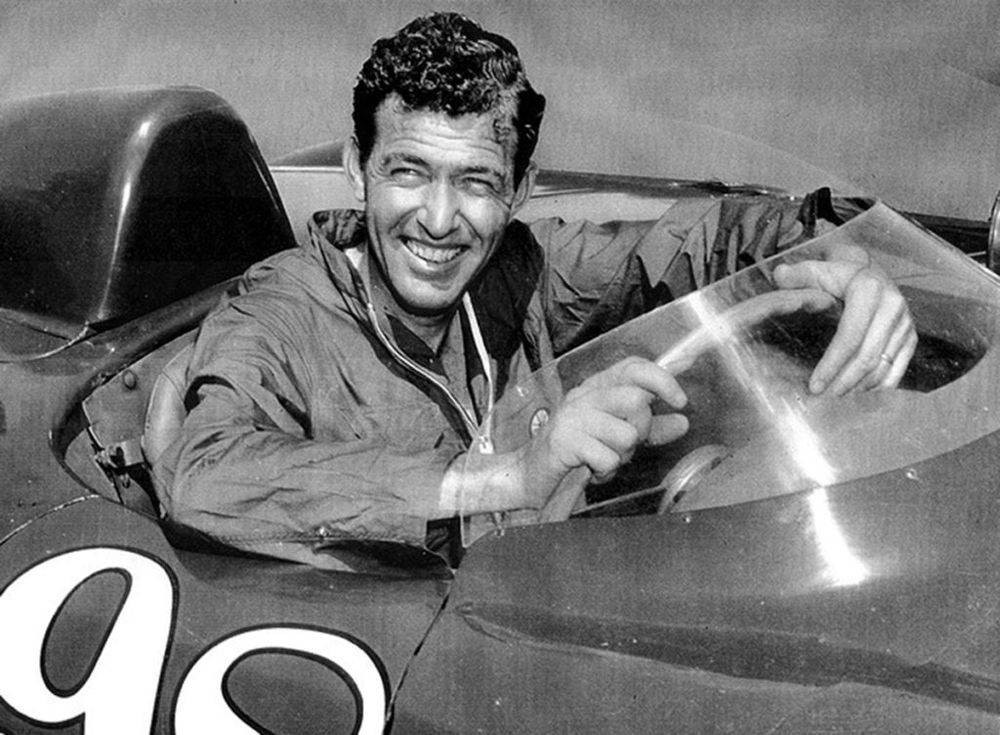

Перші аматорські гоночні спроби
Одного разу приятель по льотній школі запропонував йому взяти участь у вуличній гонці і навіть не пошкодував для цього свій особистий MG TC. Після війни такі змагання стихійно організовувалися у багатьох містах США, а Керролу Шелбі пощастило народитися в цей час.
Професійні гонки
Після кількох успішних заїздів Керролл потрапив в поле зору спортивних команд Aston Martin, Cad-Allard і Maserati, які виступали по всій країні на європейських машинах, і до 1954 року він вже став зіркою американських професійних гонок. Крім того, на автомобілі Austin-Healey 100S Endurance Шелбі встановив 16 американських і світових рекордів швидкості на знаменитому соляному озері в Бонневілль.
Перші аварії Керролла Шелбі
Вся ця історія могла скінчитись, ще в 1954 році, коли Керролл потрапив в першу велику аварію. Його автомобіль зійшов з траси в гонці чемпіонату Carrera Panamericana, перевернувшись чотири рази. Однак кілька операцій і шина на руці не внесли серйозних змін в графік перемог Керролла Шелбі. У 1955 році він виграв в Торрі Пайнс, керуючи чотирьохлітровим родстером Mexico Ferrari. Ця перемога дала йому доступ до гонки на більш потужному Ferrari з двигуном 4.9 V12, а також квиток до Європи.
Журнал “Sport Illustrated” назвав його найкращим гонщиком 1956 і 1957 року народження, але це був тільки початок кар’єри Шелбі. У 1958 він спробував свої сили у Формулі-1. Його команда “Scuderia Centro Sud Maserati” посіла високе четверте місце в гонці в Монці. За цим успіхом надійшло запрошення в заводську команду “Aston Martin F1”, яке він з гордістю прийняв. Однак вище восьмого місця в F1 Шелбі так і не піднявся.
Перемога в Le-Mans 24 та участь в F1
В кінці 50-х серце знову нагадало про себе. Перший біл в грудях Шелбі відчув ще у вересні 1959 року. Це була стенокардія, але діагноз тоді поставили невірно, і він продовжив змагання. Болі в серці не завадили йому ефектно перемогти в 24 годинній гонці в Ле-Мані на Aston Martin DBR1/ 300 – і це незважаючи на те, що всю гонку він розсмоктував таблетки нітрогліцерину!
Шелбі змагався і у Формулі 1 в період з 1958 по 1959 рік, стартувавши у загальній складності у восьми перегонах чемпіонату світу і декількох позазалікових Гран-прі.
Кінець кар'єри гонщика та початок кар'єри автовиробника
Рік по тому лікарі поставили хрест на його спортивній кар’єрі – на цьому історія успіху, по ідеї, повинна була б закінчитися. Але не у випадку з Шелбі. Він придумав нову авантюру. Дізнавшись, що у англійського виробника AC Cars пропав постачальник двигунів, він вирішив підшукати для їх родстера більш потужний двигун у одного з американських виробників.

AC Cobra
Невідомо, як склалася б далі доля колишнього льотчика, невдалого птахівника й чемпіона автогонок, якби йому відмовили й у Ford. Але доля звела Керролла Шелбі з самим Лі Якокка – одним з найбільш далекоглядних менеджерів за всю історію американських автокорпорацій. Якокка не тільки надав йому двигуни, але і дав 25 тисяч доларів на витрати! В Англії на пропозицію теж погодилися. Залишалося тільки зібрати всю цю схему воєдино і придумати назву.
Машину Шелбі робив сам, вдаючись до допомоги знайомих і друзів тільки на найскладніших етапах складання. За легендою, уві сні Керролу наснився напис Cobra на його авто. Так на світ з’явилася AC Cobra, а пізніше – Shelby Cobra. Отруйна змія (а разом з нею і його прізвище) стала відомим на весь світ брендом. Через рік, в 1962 році Керролл відкрив фірму Shelby American INC. Ця подія поклала початок нового періоду в його житті.
Для просування своєї першої моделі Шелбі придумав ефектний хід. Машину, яку він видавав журналістам, кожен раз фарбували в новий яскравий колір, щоб у публіки склалося враження, що автомобілів у нього багато. Однак багато їх ніколи не було. Стиль Шелбі – це обмежена серія. Машин завжди було мало, ціни були демократичними, а черги- величезними!
Cobra CSX 2000
Першу Cobra CSX 2000 пофарбували яскраво жовтою фарбою і виставили на стенді Ford на Нью-Йоркській виставці 1962 року. Уже через рік Cobra здобула першу перемогу, побивши в Ріверсайді Corvette Stingray. Однак для європейського чемпіонату ця машина не підходила по швидкості.
Schelby Cobra 427. Всього було випущено три кузова Cobra, що відрізнялися потужністю двигуна і настройками шасі. За номерами Cobra 260, 289, і 427 ховається об’єм двигуна в кубічних дюймах. Відповідно, двигуни були об’ємом 4,2, 4,7 і 7 літрів. Все – фордовские V8. Найпотужніший двигун розвивав 425 кінських сил і 650 Нм.
Cobra Daytona Coupe
Керролл Шелбі також створив спеціарльну версію Cobra Daytona Coupe з більш потужним двигуном і аеродімічним кузовом з дахом, щоб вона могла набрати 300 кілометрів на годину на довгій прямій Мулсанн в Ле-Мане. Ці автомобілі робилися вже не в його гаражі. Шелбі лише приймав рішення по дизайну і механіки, але безпосередньо машинами займалися професіонали. Пітер Брук – американський дизайнер – відповідав за зовнішній вигляд, а інженер Боб Негстед – за підвіску. Перший кузов зібрали в Америці в Каліфорнії, а решту п’ять в Модені, в італійському ательє Carrozzeria Gransport. У 1964 році Daytona виграла «12 годин Себрінг», перемогла в Ле-Ман 24, а через рік стала найшвидшою в Дайтоні і Себрінзі.
Кожна Cobra Daytona Coupe була пофарбована в свій колір залежно від країни або змагання, в якому вона брала участь. Під капотом цих машин стояв фордовский V8 об’ємом майже 6,6 літра. Двигун розвивав 500 кінських сил і до сотні ці машини розганялися за 8,2 секунди.
Ford GT40 - "вбивця" Ferrari
Слідом за Daytona Шелбі взяв участь в створенні Ford GT40, побудованому з однією метою – остаточно побити Ferrari на європейських трасах. Правда, Керролла взяли в команду далеко не відразу – йому довірили виправляти помилки першої серії GT40, яка до цього прославилася лише сходами з траси.
Багато сучасників називали Шелбі і механіком, і інженером. Він дійсно деколи вигадував вузли або удосконалив існуючі, але головна його заслуга – це ідеї. Він підказував ті рішення, які працювали в гонках, допомагаючи пілотам перемогти суперників. Він був як льотчик-випробувач, який дає точні вказівки на виправлення недоліків. Так було і з GT40 – Шелбі допоміг налаштувати шасі, порадив збільшити спойлери, які утримували машину в поворотах, а також вирішив замінити 4,2-літровий мотор на семилітровий.
У 1966 році GT40 зайняв весь подіум Ле-Ман! Ford вигравав у знаменитій гонці чотири роки поспіль – до 1969. Як потім згадував Шелбі, головною заслугою була нова гальмівна система, точніше – можливість повністю її замінити всього за хвилину. Крім Ле-Мана GT40 переміг в 24-годинній гонці в Дайтоні і в 12-годинній гонці в Себрінге. І всюди Ferrari була повалена. Цифра 40 в назві Ford GT4 – це висота машини в дюймах (1,02 м).
Shelby Mustang GT 350
Паралельно зі спортивними проектами Шелбі працював і над цивільними версіями спортивних автомобілів Shelby Mustang GT350. Шелбі створив не просто заряджений автомобіль, а ікону тюнінгу на довгі роки.
Mustang Schelby GT 350, над яким попрацював Шелбі, видавав 310 кінських сил (замість стандартних 271). Пізніше з’явилися ще потужніші версії, такі як GT500KR (King of the road- “король дороги”) і Police interceptor (“поліцейський перехоплювач”) з двигуном 428 Cobra Jet . Їх потужність сягала 610 кінських сил. У 1965 році приблизно третина машин отримала дві “ле-мановскіх” білі смуги через весь кузов. Сьогодні вже складно знайти GT350 без них.
Maecenas lacinia felis nec placerat sollicitudin. Quisque placerat dolor at scelerisque imperdiet. Phasellus tristique felis dolor.
Maecenas elementum in risus sed condimentum. Duis convallis ante ac tempus maximus. Fusce malesuada sed velit ut dictum. Morbi faucibus vitae orci at euismod. Integer auctor augue in erat vehicula, quis fermentum ex finibus.
Mauris pretium elit a dui pulvinar, in ornare sapien euismod. Nullam interdum nisl ante, id feugiat quam euismod commodo. Sed ultrices lectus ut iaculis rhoncus. Aenean non dignissim justo, at fermentum turpis. Sed molestie, ligula ut molestie ultrices, tellus ligula viverra neque, malesuada consectetur diam sapien volutpat risus. Quisque eget tortor lobortis, facilisis metus eu, elementum est. Nunc sit amet erat quis ex convallis suscipit. ur ridiculus mus.